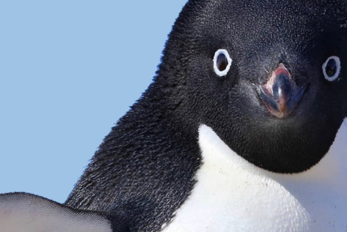

|  | 정은교1,2학년 때 공부안하고 쳐놀은 얼레벌레 컴퓨터공학도 3학년 일단 대학교에 입학한 이 학생은 코로나 직격탄으로 인해 인생에 대한 회의에 빠진다. 이 과를 왜 선택했는가. '이 대학에서 무엇을 하고 싶은가.' '이 과가 진정 자신의 적성에 맞는가.'등등 2년 동안 독서(라고 쓰고 웹툰, 소설 보기), 시청각 자료 감상(이라 쓰고 애니 보기),캠핑, 운동(이라 쓰고 숨쉬기 운동), 캘리그래피, 그림그리기 등의 해보고 싶은 것들을 하다가 얼렁뚱땅 3학년이 되어버렸다. 1학년 1학기 코딩을 어렵다고 느끼진 않았으나, 이후 공부를 하지 않았고 3학년 전공과목에 갈려나갔다. 헤헤 몇몇 과목의 재수강과 더불어 추가학기는 당연지사가 되어버린 이 양아치 대학생은 한 때 우등생이었다. 그 시절 우등생이었던 저력을 다시 보여줘야겠군. |
이 학교는 수원시 장안구 정자동에 위치해 있으며 꽤나 말썽쟁이들이 많았다.(그 중 하나가 이 대학생이었다는 얘기)
재학 기간: 대략 2008년~2013년
특이 사항: 인삿말이 '효도하겠습니다>_0' 였다.
이 학교는 역시 수원시 장안구 정자동에 위치해 있으며, 명인초 출신들은 더블 명인인으로 약간의 해리포터 슬리데린 느낌(막이래)
재학 기간: 2014년~2016년
특이 사항: 교복 와이셔츠가 꽤나 파격적이다. 네이비색 스트라이프(환장할 노릇이었다. 궁금하다면 여기 로 가봐라)
본 학교는 중국 장소성 소주시에 위치해있는 학교다. 그렇다. 정은교 학생은 짧은 해외파다.
재학 기간: 2017년 2월~ 2017년 6월
특이 사항: 학생 인원이 많지 않았으며, 정은교 학생은 첫 해외 수학으로 얼레벌레 다녔다.
본 학교 역시 중국 장소성 소주시에 위치해있는 학교이다. 학교를 옮긴 이유는 후자의 학교가 더 크고 이 동네에서 알아주는 학교다. 그렇다면 왜 바로 여기를 가지 않았냐고?ㅋ 영어를 못해서 떨어졌었다ㅋ 다시 시험봐서 붙었다는,, 히헤헿
재학 기간: 2017년 8월~2020년 5월
특이 사항: 재학 기간을 유심히 보았는가? 그렇다. 2020년은 코로나의 서막이 시작된 년도다. 마지막 다섯달은 학교를 잘 가지도 못했다.
본 학교는 서울특별시 마포구에 위치해있으며, 대한민국에서 꽤나 명문대에 속한다. 학교 규모는 크지 않고, 학교에 돈도 그렇게 많지 않으나, 신촌 한복판에 위치하여 있다는 점과 열정많고 끼많은 학생들이 많다.(물론 이 대학생은 둘다 속하지 않는다. 울까.)
재학 기간: 2021년 ~ ing
특이 사항: 그렇다. 이 양아치 대학생은 꽤나 명문대 대학생이며, 공부를 좀 했다; 히헿 지금은 대가리 꽃밭 대학생
| 기간 | 명명 |
|---|---|
| 2006~2007 | 벨튀하는 말광량이 고집불통 어린이 |
| 2008~2013 | 태권도 학원에서 배운 기술로 가오 잡는 허세 어린이 |
| 2014~2016 | 엑소를 열렬히 좋아하며 왠지 모르겠으나 공부를 잘하면 엑소 카이와 결혼할 수 있다고 생각하여 공부를 했던 청소년 |
| 2017~2020 | 얼레벌레 유학을 가 뒤쳐지지 않으려 열심히 공부했던 선머슴 청소년 |
| 2021~ ing | 고삐 풀린 망아지 마냥 뛰놀았던 1,2학년을 뒤로하고 차츰 정신머리를 되찾기 시작한 얼레벌레 대학생 |
| 스킬 | 등급 | 스킬 | 등급 |
|---|---|---|---|
| 먹기 | ⭐⭐⭐⭐⭐ | 혼자놀기 | ⭐⭐⭐⭐⭐ |
| 잠자기 | ⭐⭐⭐⭐⭐ | 유머 | ⭐⭐⭐⭐ |
| 애니보기 | ⭐⭐⭐⭐⭐ | 성대모사 | ⭐⭐⭐ |
| 헛소리하기 | ⭐⭐⭐⭐⭐ | 연애 | ⭐ |